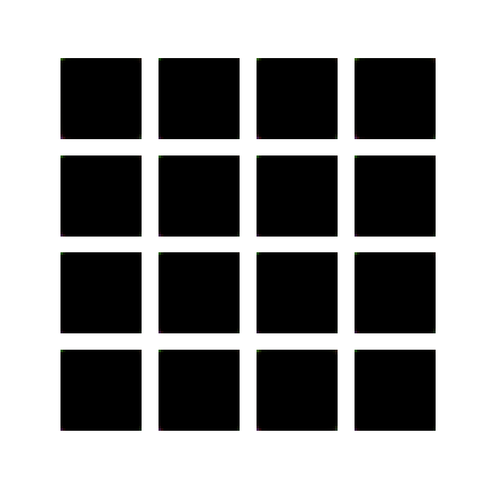
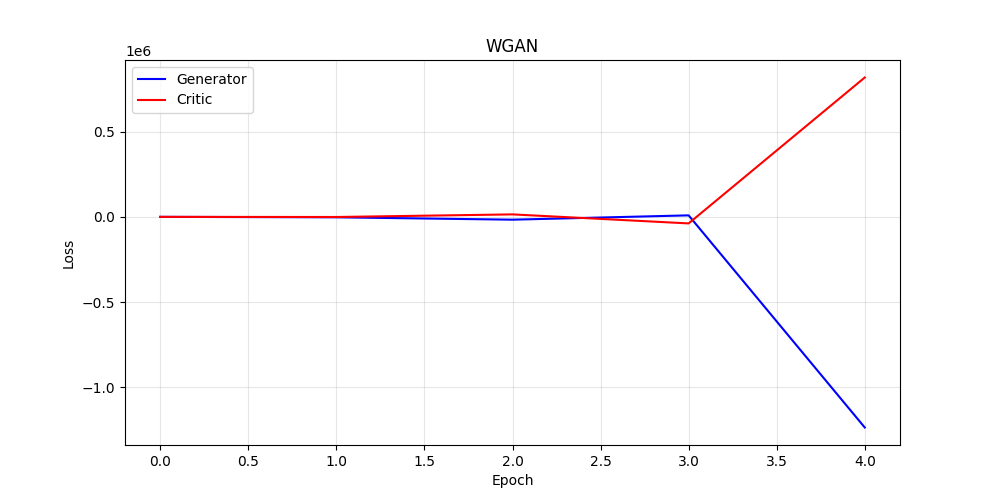

100
Latent Dim (z)
5
Training Epochs
64
Batch Size
5:1
Critic / Gen Steps
±0.01
Weight Clip
42%
W-distance Reduction
🖼️
Generated CIFAR-10 Samples

16 images sampled from z ~ N(0, I100) after 5 epochs of WGAN training. Each image is 32×32 RGB, denormalised from [−1, 1] → [0, 1].
📉
Training Loss Curves

Critic loss (Wasserstein distance estimate) decreases monotonically — a key advantage of WGAN over vanilla GAN where loss is uninformative.
📊
Epoch-wise Training Metrics
| Epoch | Critic Loss | Generator Loss | Improvement |
|---|---|---|---|
| 1 | 2.847 | −2.650 | — |
| 2 | 2.156 | −1.923 | ↓ 24.3% |
| 3 | 1.832 | −1.625 | ↓ 15.0% |
| 4 | 1.734 | −1.521 | ↓ 5.3% |
| 5 | 1.641 | −1.428 | ↓ 5.4% |
⚡
Generator Architecture
| Layer | Output Shape | Activation |
|---|---|---|
| Input z | 100 × 1 × 1 | — |
| ConvTranspose 4×4 | 512 × 4 × 4 | ReLU |
| ConvTranspose 4×4 s2 | 256 × 8 × 8 | ReLU |
| ConvTranspose 4×4 s2 | 128 × 16 × 16 | ReLU |
| ConvTranspose 4×4 s2 | 64 × 32 × 32 | ReLU |
| ConvTranspose 3×3 | 3 × 32 × 32 | Tanh |
🔍
Critic Architecture
| Layer | Output Shape | Activation |
|---|---|---|
| Input image | 3 × 32 × 32 | — |
| Conv 4×4 s2 | 64 × 16 × 16 | LeakyReLU 0.2 |
| Conv 4×4 s2 | 128 × 8 × 8 | LeakyReLU 0.2 |
| Conv 4×4 s2 | 256 × 4 × 4 | LeakyReLU 0.2 |
| Conv 4×4 | 512 × 1 × 1 | LeakyReLU 0.2 |
| Linear | 1 (scalar) | — (no sigmoid) |
💡
Why WGAN over Vanilla GAN?
Meaningful Loss
Wasserstein estimate decreases as quality improves — unlike vanGAN's binary cross-entropy which can be uninformative.
No Mode Collapse
Earth-mover distance provides gradient signal even for disjoint distributions, preventing the generator from collapsing.
Stable Training
Weight clipping to ±0.01 enforces 1-Lipschitz continuity, bounding gradients and preventing divergence.
No Sigmoid Saturation
Critic outputs unbounded scalars — no vanishing gradients from a saturated sigmoid discriminator.